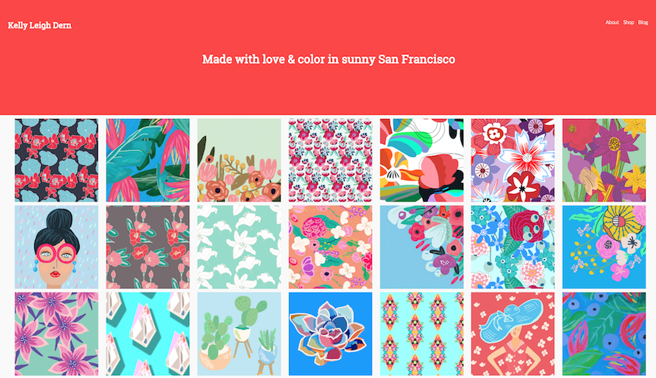
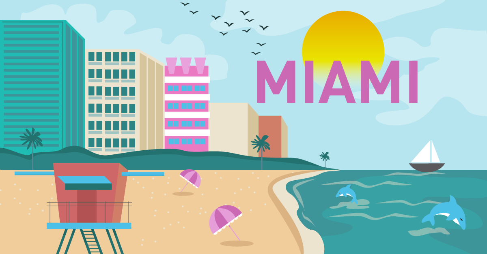
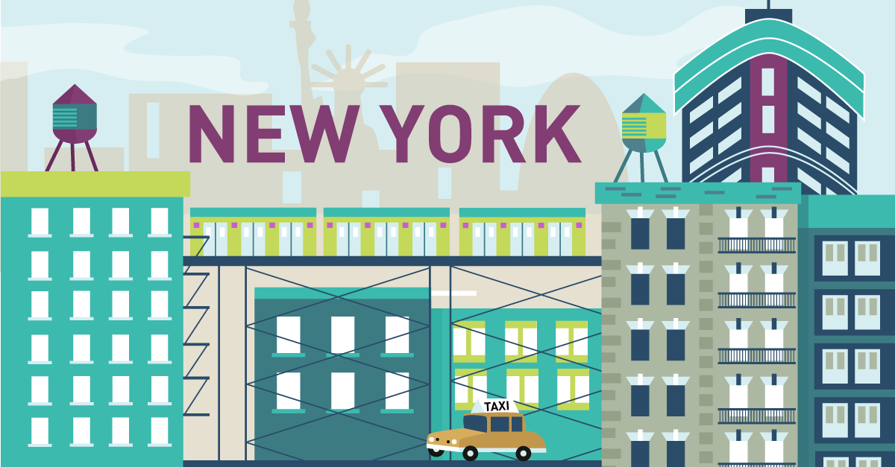
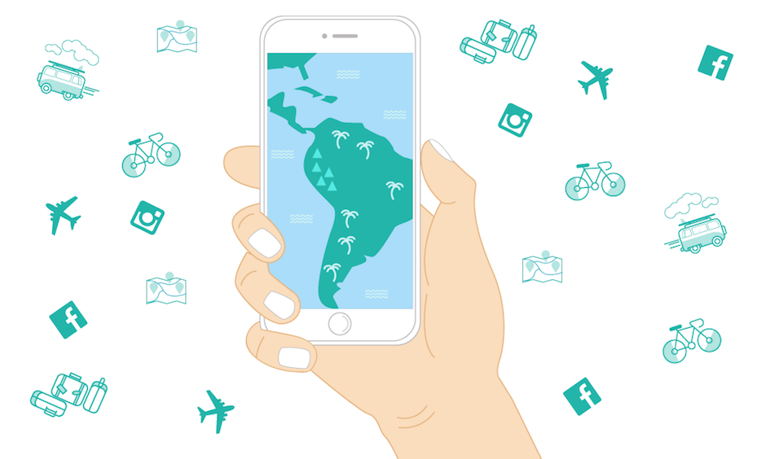

ILLUSTRATION
THE PROCESS OF ILLUSTRATING
KELLY LEIGH DERN ILLUSTRATIONS
I enjoy the process of painting and illustrating. I keep myself business with a mix of personal projects and client projects. My process usually involves a mindmap, then I move to a rough sketch followed by the polished piece. I will usually create three to five different options before moving to the final design.
CITIES
I created these illustrations for a social media campaign for Sojern. The campaign targeted specific metro areas and used the illustrations to highlight landmarks in those areas.
 ALPHABET FOR FOODIES
The Alphabet for Foodies project began when I found out that I could combine my three great loves—letterforms, bright colors and food—all one place. This is a collection of some of my favorite food illustrations. I hope you enjoy it as much as I do!

MOBILE USAGE IN LATIN AMERICA
An illustration for Sojern's blog looking at the rise of travel searches on mobile devices in Latin America.
